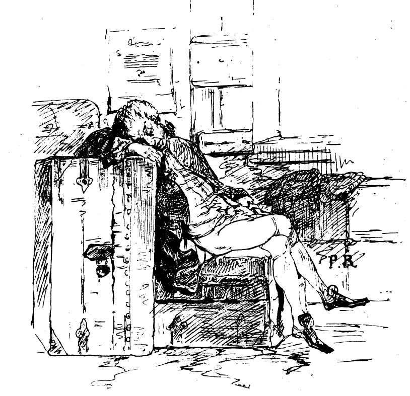

Bibliografia

Testi
- Nievo I., Il Barone di Nicastro, nota e commento di S.
Contarini, in Id., Opere, t. II, a cura di U. M. Olivieri, Milano-Napoli, Ricciardi, 2015.
- Nievo I., Le Confessioni d’un Italiano, a cura di S.
Romagnoli, introduzione di C. De Michelis, Venezia, Marsilio, 2000
- Nievo I., Le Confessioni d’un Italiano, ed. critica a
cura e commento di S. Casini, Parma, Fondazione Pietro Bembo - Guanda, 1999
- Nievo I., Il Conte pecorajo. Storia del secolo presente,
testo critico secondo l’ed. a stampa del 1857, a cura di S. Casini, Venezia, Marsilio, 2010
- Nievo I., Il Conte pecorajo. Storia del secolo presente,
testo critico secondo i mss. del 1855-56, a cura di S. Casini, Venezia, Marsilio, 2011
- Nievo I., Novelliere campagnuolo e altri racconti, a
cura di I. De Luca, Torino, Einaudi, 1956
- Nievo I., Novelle, a cura di M. Colummi Camerino,
Venezia, Marsilio, 2012
- Nievo I., Scritti politici e di attualià, a cura di A.
Motta, Venezia, Marsilio, 2016
- Nievo I., Scritti di letteratura, a cura di A. Motta,
Venezia, Marsilio, 2023
- Nievo I., Lettere, a cura di M. Gorra, Venezia,
Marsilio, 1981
Letteratura critica
- Casini S., Nievo e Mazzini. La rivoluzione del 1849 tra
biografia e finzione, in Ippolito Nievo tra letteratura e storia, a cura di S. Casini, E. Ghidetti, R.
Turchi, Roma, Bulzoni, 2004, pp. 117-135
- Cerneaz S., Le carte di Nievo a Udine. Notizie dal fondo
Nievo-Ciceri della Biblioteca Civica Vincenzo Joppi, in «Pisana», I (2019), pp. 149-160
- Chaarani-Lesourd E., Ippolito Nievo. Uno scrittore
politico, Venezia, Marsilio, 2011.
- Colummi Camerino E., La corsa di prova e altre novelle,
in Ippolito Nievo centocinquant'anni dopo. Atti del Convegno. Padova 19-21 ottobre 2011, a cura di E. Del
Tedesco, Roma-Pisa, Fabrizio Serra Editore, 2013, pp. 205-213.
- Contarini S., Il tempo della cornacchia. Satira e politica
ne Il Brone di Nicastro di Ippolito Nievo, in La satira in prosa. Tradizioni, forme e temi dal
Trecento all'Ottocento, a cura di P. Rigo e C. Mazzoncini, Firenze, Cesati, 2019, pp. 163-178.
- De Michelis C., Nievo e il ’48, in Ippolito Nievo
centocinquant'anni dopo. Atti del Convegno. Padova 19-21 ottobre 2011, a cura di E. Del Tedesco,
Roma-Pisa, Fabrizio Serra Editore, 2013, pp. 113-27.
- Della Peruta S., Il giornalismo italiano del Risorgimento.
Dal 1847 all’Unità, Milano, FrancoAngeli, 2011
- Falcetto B., «Mondo, città, paesi. Geografia e letteratura
nella narrativa nieviana», in Ippolito Nievo e il Mantovano, Atti del Convegno nazionale, a cura di
G. Grimaldi, Venezia, Marsilio, 2001, pp. 55-76.
- Garau S., “A cavalcione di questi due secoli”.
Cultura riflessa nelle Confessioni d’un Italiano e in altri scritti di Ippolito Nievo, Roma,
Edizioni di Storia e Letteratura, 2010.
- Gorra M., Il diavolo nella biblioteca di Nievo, ossia Le
Sage e De Vigny, in «Belfagor», 3, 1985, pp. 577-588
- Gorra M., Intorno agli pseudonimi nieviani, in Ead.,
Nievo fra noi , Firenze , La Nuova Italia , 1970 , pp . 193-203.
- Gorra M., Nievo e la censura, in Ead., Nievo fra
noi, Firenze , La Nuova Italia , 1970 , pp . 165-192.
- Jorio C., Ippolito Nievo e il processo
dell’Avvocatino. Con documenti inediti, in «Giornale storico della letteratura italiana», CV. 315,
1935, pp. 221-304 e CVI. 316-7, pp. 1-38.
- Maffei G., Nievo, Roma, Salerno, 2012.
- Mantovani D., Il Poeta Soldato. Ippolito Nievo
1831-1861, Milano, Treves, 1900.
- Mazzacurati G., Pitagora a New York: per una prefazione
al Barone di Nicastro di Ippolito Nievo, in Id., Forma e ideologia (Dante, Boccaccio,
Straparola, Manzoni, Nievo, Verga, Svevo), Napoli, Liguori, 1974, pp. 269-293.
- Morachioli S., L’Italia alla rovescia. Ricerche sulla
caricatura giornalistica tra il 1848 e l’Unità, Pisa, Edizioni della Normale, 2013.
- Motta A., Nievo, o dell’allusione, in Latenza.
Preterizioni, reticenze e silenzi del testo. Atti del XLIII Convegno Interuniversitario (Bressanone, 9-12
luglio 201), a cura di A. Barieri ed E. Gregori, Padova, Esedra, 2016, pp. 195-209.
- Murru C., Per una indagine sul non detto nelle riviste
umoristiche preunitarie 'Il Pungolo' e 'L'uomo di Pietra', in Letteratura e Potere/Poteri. Atti del
XXIV Congresso dell’ADI (Associazione degli Italianisti) Catania, 23-25 settembre 2021, a cura di A.
Manganaro – G. Traina – C. Tramontana, Roma, Adi editore, 2023, disponibile al seguente link.
- Olivieri U. M., Il giornalismo nieviano: attualità e
territorio, in Ippolito Nievo: giornalismo e informazione. Atti del Convegno Nazionale di Studi su
Ippolito Nievo 10 ottobre 2020 – Fossalta di Portogruaro, a cura di M. Santiloni, Firenze, Cesati, 2021,
pp. 29-39.
- Olivieri U. M., L’idillio interrotto. Forma-Romanzo e
“generi intercalari” in Ippolito Nievo, Milano, Franco Angeli, 2002.
- Zannini A., Nievo e il 1797, in Ippolito Nievo
centocinquant'anni dopo. Atti del Convegno. Padova 19-21 ottobre 2011, a cura di E. Del Tedesco,
Roma-Pisa, Fabrizio Serra Editore, 2013, pp. 289-304.